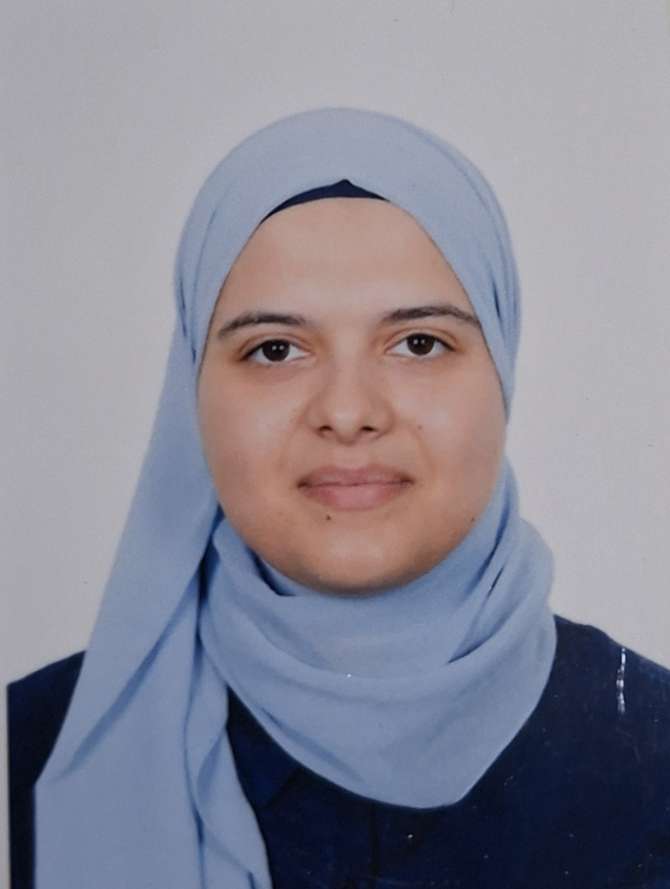

Licence L3 SEM
Institut Supérieur des Études Technologiques de Radès (ISET de Radès) — Tunisie

CV NUMÉRIQUE · RECHERCHE DE STAGE
Étudiante en troisième année de licence L3 SEM à l’ISET de Radès, intéressée par la robotique, l’Internet des objets (IoT) et les systeme embarqués . Ayant suivi des formations en Arduino et SolidWorks, je souhaite mettre en pratique mes connaissances à travers un stage professionnel. Responsable du club de robotique, j’apprécie le travail en équipe et la participation à des projets techniques.
Institut Supérieur des Études Technologiques de Radès (ISET de Radès) — Tunisie
Baccalauréat en section technique — Tunisie
Formation aux technologies des objets connectés.
Formation aux cartes électroniques et aux projets de systèmes embarqués.
Formation en conception et modélisation assistées par ordinateur.
Projet portant sur une maison intelligente.
Projet de réalisation d’un système de sécurité.
Projet consacré à la sécurité des armoires de fibre optique de Tunisie Télécom.
À la recherche d’un stage pour développer mes compétences et contribuer à des projets techniques.